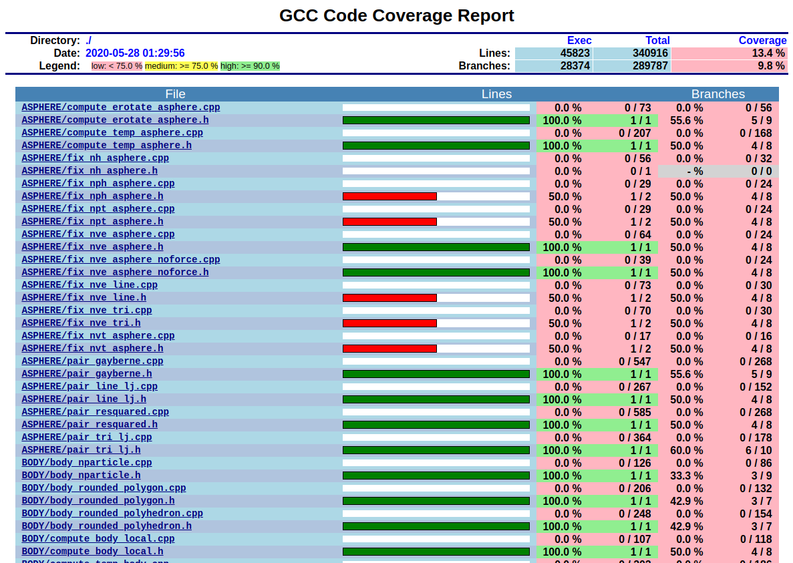
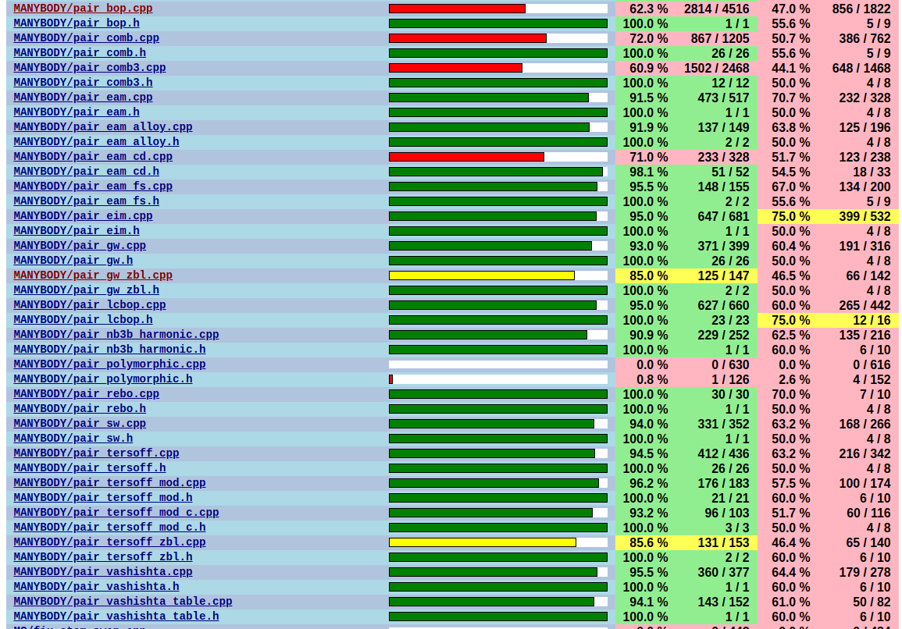
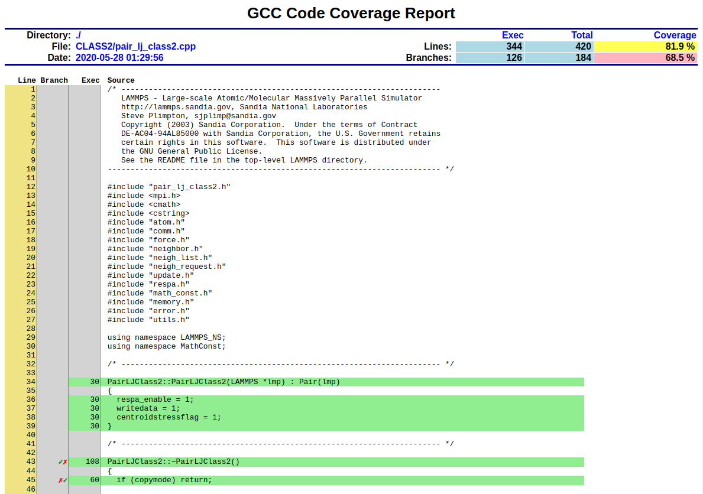
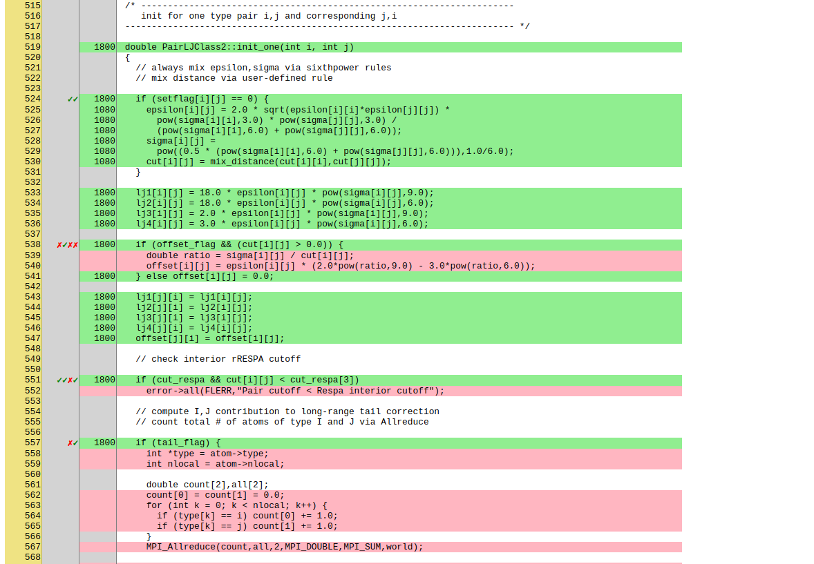

\(\renewcommand{\AA}{\text{Å}}\)
3.12. Development build options
The build procedures in LAMMPS offers a few extra options which are useful during development, testing or debugging.
3.12.1. Monitor compilation flags (CMake only)
Sometimes it is necessary to verify the complete sequence of compilation flags generated by the CMake build. To enable a more verbose output during compilation you can use the following option.
-D CMAKE_VERBOSE_MAKEFILE=value # value = no (default) or yes
Another way of doing this without reconfiguration is calling make with variable VERBOSE set to 1:
make VERBOSE=1
3.12.2. Report missing and unneeded ‘#include’ statements (CMake only)
The conventions for how and when to use and order include statements in LAMMPS are documented in LAMMPS programming style. To assist with following these conventions one can use the Include What You Use tool. This tool is still under development and for large and complex projects like LAMMPS there are some false positives, so suggested changes need to be verified manually. It is recommended to use at least version 0.16, which has much fewer incorrect reports than earlier versions. To install the IWYU toolkit, you need to have the clang compiler and its development package installed. Download the IWYU version that matches the version of the clang compiler, configure, build, and install it.
The necessary steps to generate the report can be enabled via a CMake variable during CMake configuration.
-D ENABLE_IWYU=value # value = no (default) or yes
This will check if the required binary (include-what-you-use or iwyu) and python script (iwyu-tool or iwyu_tool or iwyu_tool.py) can be found in the path. The analysis can then be started with:
make iwyu
This may first run some compilation, as the analysis is dependent on recording all commands required to do the compilation.
3.12.3. Address, Leak, Undefined Behavior, and Thread Sanitizer Support (CMake only)
Compilers such as GCC and Clang support generating instrumented binaries which use different sanitizer libraries to detect problems in the code during run-time. They can detect issues like:
Please note that this kind of instrumentation usually comes with a
performance hit (but much less than using tools like Valgrind with a more low level approach). To enable
these features, additional compiler flags need to be added to the
compilation and linking stages. This is done through setting the
ENABLE_SANITIZER variable during configuration. Examples:
-D ENABLE_SANITIZER=none # no sanitizer active (default)
-D ENABLE_SANITIZER=address # enable address sanitizer / memory leak checker
-D ENABLE_SANITIZER=hwaddress # enable hardware assisted address sanitizer / memory leak checker
-D ENABLE_SANITIZER=leak # enable memory leak checker (only)
-D ENABLE_SANITIZER=undefined # enable undefined behavior sanitizer
-D ENABLE_SANITIZER=thread # enable thread sanitizer
3.12.4. Code Coverage and Unit Testing (CMake only)
The LAMMPS code is subject to multiple levels of automated testing when pull requests are submitted to the LAMMPS repository on GitHub:
Coding style compliance (see Coding style utilities)
Integration testing (i.e. whether the code compiles on multiple platforms and with a variety of compilers and settings),
Unit testing (i.e. whether certain functions or classes of the code produce the expected results for given inputs),
Run testing (i.e. whether selected input decks can run to completion without crashing for multiple configurations),
Regression testing (i.e. whether selected input examples reproduce the same results over a given number of steps and operations within a given error margin).
The tests are currently run as GitHub Actions and their configuration
files are in the .github/workflows/ folder of the LAMMPS git tree.
The test status of these tests is reported with the corresponding pull
request and the pull request cannot be merged without all tests passing.
In addition, there is a nightly test run using the develop branch to
generate code coverage data for the included tests (see below), provided
there have been changes to that tree. The results of this test run can
be currently viewed at https://download.lammps.org/coverage/tests.html
Regression tests can also be performed locally with the regression tester tool. The tool checks if a given LAMMPS binary, when run with selected input examples produces, thermo output that is consistent with the provided log files. The script can be run in one pass over all available input files, but it can also first create multiple lists of inputs or folders that can then be run with multiple workers concurrently to speed things up. Another mode allows to do a quick check of inputs that contain commands that have changes in the current checkout branch relative to a git branch. This works similar to the two pass mode, but will select only shorter runs and no more than 100 inputs that are chosen randomly. This ensures that the quick test runs significantly faster compared to the full test run. These test runs can also be performed with instrumented LAMMPS binaries (see previous section).
The unit testing facility is integrated into the CMake build process of
the LAMMPS source code distribution itself. It can be enabled by
setting -D ENABLE_TESTING=on during the CMake configuration step.
It requires the YAML library and matching
development headers to compile (if those are not found locally a recent
version of that library will be downloaded and compiled along with
LAMMPS and the test programs) and will download and compile a specific
version of the GoogleTest C++
test framework that is used to implement the tests. Those unit tests
may be combined with memory access and leak checking with valgrind (see
below for how to enable it). In that case, running so-called death
tests will create a lot of false positives and thus they can be disabled
by configuring compilation with the additional setting -D
SKIP_DEATH_TESTS=on.
After compilation is complete, the unit testing is started in the build
folder using the ctest command, which is part of the CMake software.
The number of available tests will depend on the LAMMPS versions,
installed LAMMPS packages, configuration settings, development
environment, and operating system.
The output of the plain ctest command looks something like the following:
$ ctest
Test project /home/akohlmey/compile/lammps/build-testing
Start 1: RunLammps
1/563 Test #1: RunLammps .................................. Passed 0.28 sec
Start 2: HelpMessage
2/563 Test #2: HelpMessage ................................ Passed 0.06 sec
Start 3: InvalidFlag
3/563 Test #3: InvalidFlag ................................ Passed 0.06 sec
Start 4: Tokenizer
4/563 Test #4: Tokenizer .................................. Passed 0.05 sec
Start 5: MemPool
5/563 Test #5: MemPool .................................... Passed 0.05 sec
Start 6: ArgUtils
6/563 Test #6: ArgUtils ................................... Passed 0.05 sec
[...]
Start 561: ImproperStyle:zero
561/563 Test #561: ImproperStyle:zero ......................... Passed 0.07 sec
Start 562: TestMliapPyUnified
562/563 Test #562: TestMliapPyUnified ......................... Passed 0.16 sec
Start 563: TestPairList
563/563 Test #563: TestPairList ............................... Passed 0.06 sec
100% tests passed, 0 tests failed out of 563
Label Time Summary:
generated = 0.85 sec*proc (3 tests)
noWindows = 4.16 sec*proc (2 tests)
slow = 78.33 sec*proc (67 tests)
unstable = 28.23 sec*proc (34 tests)
Total Test time (real) = 132.34 sec
The ctest command has many options, the most important ones are:
Option |
Function |
|
verbose output: display output of individual test runs |
|
parallel run: run <num> tests in parallel |
|
provide path to the CMake build folder. By default |
|
run subset of tests matching the regular expression |
|
exclude subset of tests matching the regular expression |
|
run subset of tests with a label matching the regular expression |
|
exclude subset of tests with a label matching the regular expression |
|
dry-run: display list of tests without running them |
|
run tests with valgrind memory checker (if available) |
In its full implementation, the unit test framework will consist of multiple kinds of tests implemented in different programming languages (C++, C, Python, Fortran) and testing different aspects of the LAMMPS software and its features. The tests will adapt to the compilation settings of LAMMPS, so that tests will be skipped if prerequisite features are not available in LAMMPS.
Work in Progress
The unit test framework was added in spring 2020 and is under active development. The coverage is not complete and will be expanded over time. Preference was given to test parts of the code base that are easy to test or commonly used.
Tests as shown by the ctest program are commands defined in the
CMakeLists.txt files in the unittest directory tree. A few
tests simply execute LAMMPS with specific command-line flags and check
the output to the screen for expected content. A large number of unit
tests are special tests programs using the GoogleTest framework and linked to the LAMMPS
library that test individual functions or create a LAMMPS class
instance, execute one or more commands and check data inside the LAMMPS
class hierarchy. There are also tests for the C-library, Fortran, and
Python module interfaces to LAMMPS. The Python tests use the Python
“unittest” module in a similar fashion than the others use GoogleTest.
These special test programs are structured to perform multiple
individual tests internally and each of those contains several checks
(aka assertions) for internal data being changed as expected.
Tests for force computing or modifying styles (e.g. styles for non-bonded and bonded interactions and selected fixes) are run by using a more generic test program that reads its input from files in YAML format. The YAML file provides the information on how to customized the test program to test a specific style and - if needed - with specific settings. To add a test for another, similar style (e.g. a new pair style) it is usually sufficient to add a suitable YAML file. Detailed instructions for adding tests are provided in the Programmer Guide part of the manual. A description of what happens during these tests is given below.
Unit tests for force styles
A large part of LAMMPS are different “styles” for computing non-bonded
and bonded interactions selected through the pair_style command,
bond_style command, angle_style command, dihedral_style command,
improper_style command, and kspace_style command commands. Since these
styles all share common interfaces, it is possible to write generic test
programs that will assemble LAMMPS inputs from templates with different
settings and call those common interfaces for small test systems with
less than 100 atoms and compare the results with pre-recorded reference
results. A test run is then a collection of multiple individual test
runs, each with many comparisons to reference results based on template
input files, individual command settings, relative error margins, and
reference data stored in a YAML format file with .yaml suffix.
Currently the programs test_pair_style, test_bond_style,
test_angle_style, test_dihedral_style, and
test_improper_style are implemented. They will compare forces,
energies and (global) stress for all atoms after a run 0 calculation
and after a few steps of MD with fix nve, each in
multiple variants with different settings and also for multiple
accelerated styles. If a prerequisite style or package is missing, the
individual tests are skipped. All force style tests will be executed on
a single MPI process, so using the CMake option -D BUILD_MPI=off can
significantly speed up testing, since this will skip the MPI
initialization for each test run.
Below is an example command and output for running a single test named
MolPairStyle:lj_cut (argument to the -R option which selects
tests by regular expression) and printing detailed output (the -V flag):
$ ctest -R MolPairStyle:lj_cut$ -V
[...]
Start 199: MolPairStyle:lj_cut
199: Test command: /home/akohlmey/compile/lammps/build-test/test_pair_style "/home/akohlmey/compile/lammps/unittest/force-styles/tests/mol-pair-lj_cut.yaml"
199: Working Directory: /home/akohlmey/compile/lammps/build-test/unittest/force-styles
199: Environment variables:
199: PYTHONPATH=/home/akohlmey/compile/lammps/unittest/force-styles/tests:/home/akohlmey/compile/lammps/python:
199: PYTHONUNBUFFERED=1
199: PYTHONDONTWRITEBYTECODE=1
199: OMP_PROC_BIND=false
199: OMP_NUM_THREADS=4
199: LAMMPS_POTENTIALS=/home/akohlmey/compile/lammps/potentials
199: LD_LIBRARY_PATH=/home/akohlmey/compile/lammps/build-test:/usr/lib64/mpich/lib:/home/akohlmey/.local/lib::
199: Test timeout computed to be: 1500
199: [==========] Running 9 tests from 1 test suite.
199: [----------] Global test environment set-up.
199: [----------] 9 tests from PairStyle
199: [ RUN ] PairStyle.plain
199: [ OK ] PairStyle.plain (17 ms)
199: [ RUN ] PairStyle.omp
199: [ OK ] PairStyle.omp (3 ms)
199: [ RUN ] PairStyle.kokkos_omp
199: [ OK ] PairStyle.kokkos_omp (6 ms)
199: [ RUN ] PairStyle.gpu
199: /home/akohlmey/compile/lammps/unittest/force-styles/test_pair_style.cpp:793: Skipped
199:
199:
199: [ SKIPPED ] PairStyle.gpu (0 ms)
199: [ RUN ] PairStyle.intel
199: [ OK ] PairStyle.intel (2 ms)
199: [ RUN ] PairStyle.opt
199: [ OK ] PairStyle.opt (2 ms)
199: [ RUN ] PairStyle.single
199: [ OK ] PairStyle.single (2 ms)
199: [ RUN ] PairStyle.extract
199: [ OK ] PairStyle.extract (1 ms)
199: [ RUN ] PairStyle.extract_omp
199: [ OK ] PairStyle.extract_omp (1 ms)
199: [----------] 9 tests from PairStyle (37 ms total)
199:
199: [----------] Global test environment tear-down
199: [==========] 9 tests from 1 test suite ran. (37 ms total)
199: [ PASSED ] 8 tests.
199: [ SKIPPED ] 1 test, listed below:
199: [ SKIPPED ] PairStyle.gpu
1/1 Test #199: MolPairStyle:lj_cut .............. Passed 0.75 sec
The following tests passed:
MolPairStyle:lj_cut
100% tests passed, 0 tests failed out of 1
Total Test time (real) = 0.76 sec
In this particular case, 8 out of 9 sets of tests were conducted, the
tests for the lj/cut/gpu pair style were skipped, since the LAMMPS
library linked to the test executable did not include the GPU package.
To learn what individual tests are performed, you (currently) need to
read the source code. You can use code coverage recording (see next
section) to confirm how well the tests cover the code paths in the
individual source files.
The force style test programs have a common set of options:
Option |
Function |
|
regenerate reference data in new YAML file |
|
update reference data in the original YAML file |
|
print error statistics for each group of comparisons |
|
verbose output: also print the executed LAMMPS commands |
Since the ctest tool has no mechanism to directly pass flags to the
individual test programs, a workaround has been implemented where these
flags can be set in an environment variable TEST_ARGS. Example:
env TEST_ARGS=-s ctest -V -R BondStyle
This adds output with statistics for the computed error of the various tests relative to the reference (e.g. the per-atom force components).
To add a test for a style that is not yet covered, it is usually best
to copy a YAML file for a similar style to a new file, edit the details
of the style (how to call it, how to set its coefficients) and then
run test command with either the -g and the replace the initial
test file with the regenerated one or the -u option. The -u option
will destroy the original file, if the generation run does not complete,
so using -g is recommended unless the YAML file is fully tested
and working. To have the new test file recognized by ctest, you
need to re-run cmake. You can verify that the new test is available
by checking the output of ctest -N.
Some of the force style tests are rather slow to run and some are very
sensitive to small differences like CPU architecture, compiler
tool chain, compiler optimization. Those tests are flagged with a “slow”
and/or “unstable” label, and thus those tests can be selectively
excluded with the -LE flag to ctest (see description of the most
commonly used ctest flags) or specifically selected using the -L
flag.
Recommendations and notes for YAML files
The reference results should be recorded without any code optimization or related compiler flags enabled.
The
epsilonparameter defines the relative precision with which the reference results must be met. The test geometries often have high and low energy parts and thus a significant impact from floating-point math truncation errors is to be expected. Some functional forms and potentials are more noisy than others, so this parameter needs to be adjusted. Typically a value around 1.0e-13 can be used, but it may need to be as large as 1.0e-8 in some cases.The tests for pair styles from OPT, OPENMP and INTEL are performed with automatically rescaled epsilon to account for additional loss of precision from code optimizations and different summation orders.
When compiling with (aggressive) compiler optimization, some tests are likely to fail. It is recommended to inspect the individual tests in detail to decide, whether the specific error for a specific property is acceptable (it often is), or this may be an indication of mis-compiled code (or an undesired large loss of precision due to significant reordering of operations and thus less error cancellation).
Use custom linker for faster link times when ENABLE_TESTING is active
When compiling LAMMPS with testing enabled, most test executables will
need to be linked against the LAMMPS library and re-linked whenever
there is a change to LAMMPS. Since this can be a very large library
with many C++ objects when many packages are enabled, link times can
become very long on machines that use the GNU BFD linker (e.g. Linux
systems). Alternative linker programs like the mold linker, the
lld linker of the LLVM project, or the gold linker available
with GNU binutils can speed up this step substantially (in this order).
CMake will by default test if any of the three can be enabled and use it
when ENABLE_TESTING is active. The linker can also be selected
manually through the LAMMPS_CUSTOM_LINKER CMake variable. Allowed
values are mold, lld, gold, bfd, or default. The
default option will use the system default linker otherwise, the
linker is chosen explicitly. This option is only available for the GNU
or Clang C++ compilers.
A small additional improvement can be obtained by building LAMMPS as a
shared library with -D BUILD_SHARED_LIBS=on. But this is a small
improvement due to reducing file I/O. Using an alternate linker has an
algorithmic improvement through using symbol resolution algorithms with
lower algorithmic complexity.
Tests for other components and utility functions
Additional tests that validate utility functions or specific components
of LAMMPS are implemented as standalone executable which may, or may not
require creating a suitable LAMMPS instance. These tests are more specific
and do not require YAML format input files. To add a test, either an
existing source file needs to be extended or a new file added, which in turn
requires additions to the CMakeLists.txt file in the source folder.
Collect and visualize code coverage metrics
You can also collect code coverage metrics while running LAMMPS or the tests by enabling code coverage support during the CMake configuration:
-D ENABLE_COVERAGE=on # enable coverage measurements (off by default)
This will instrument all object files to write information about which lines of code were accessed during execution in files next to the corresponding object files. These can be post-processed to visually show the degree of coverage and which code paths are accessed and which are not taken. When working on unit tests (see above), this can be extremely helpful to determine which parts of the code are not executed and thus what kind of tests are still missing. The coverage data is cumulative, i.e. new data is added with each new run.
Enabling code coverage will also add the following build targets to generate coverage reports after running the LAMMPS executable or the unit tests:
make gen_coverage_html # generate coverage report in HTML format
make gen_coverage_xml # generate coverage report in XML format
make clean_coverage_html # delete folder with HTML format coverage report
make reset_coverage # delete all collected coverage data and HTML output
These reports require GCOVR to be installed. The easiest way to do this to install it via pip:
python3 -m pip install gcovr
After post-processing with gen_coverage_html the results are in
a folder coverage_html and can be viewed with a web browser.
The images below illustrate how the data is presented. The coverage
data for testing the current develop branch is generated nightly
and currently available at: https://download.lammps.org/coverage/
 Top of the overview page |
 Styles with good coverage |
 Top of individual source page |
 Source page with branches |
{kind=link}
{kind=link}
{kind=link}
{kind=link}
3.12.5. Coding style utilities
To aid with enforcing some of the coding style conventions in LAMMPS some additional build targets have been added. These require Python 3.5 or later and will only work properly on Unix-like operating and file systems.
The following options are available.
make check-whitespace # search for files with whitespace issues
make fix-whitespace # correct whitespace issues in files
make check-homepage # search for files with old LAMMPS homepage URLs
make fix-homepage # correct LAMMPS homepage URLs in files
make check-errordocs # search for deprecated error docs in header files
make fix-errordocs # remove error docs in header files
make check-permissions # search for files with permissions issues
make fix-permissions # correct permissions issues in files
make check-docs # search for several issues in the manual
make check-version # list files with pending release version tags
make check # run all check targets from above
These should help to make source and documentation files conforming to some the coding style preferences of the LAMMPS developers.
3.12.6. Clang-format support
For the code in the unittest and src trees we are transitioning
to use the clang-format tool to assist with having a consistent source
code formatting style. The clang-format command bundled with Clang
version 8.0 or later is required. The configuration is in files called
.clang-format in the respective folders. Since the modifications
from clang-format can be significant and - especially for “legacy
style code” - they are not always improving readability, a large number
of files currently have a // clang-format off at the top, which will
disable the processing. As of fall 2021 all files have been either
“protected” this way or are enabled for full or partial clang-format
processing. Over time, the “protected” files will be refactored and
updated so that clang-format may be applied to them as well.
It is recommended for all newly contributed files to use the clang-format processing while writing the code or do the coding style processing (including the scripts mentioned in the previous paragraph)
If clang-format is available, files can be updated individually with commands like the following:
clang-format -i some_file.cpp
3.12.7. GitHub command-line interface
GitHub has developed a command-line tool
to interact with the GitHub website via a command called gh.
This is extremely convenient when working with a Git repository hosted
on GitHub (like LAMMPS). It is thus highly recommended to install it
when doing LAMMPS development. To use gh you must be within a git
checkout of a repository and you must obtain an authentication token
to connect your checkout with a GitHub user. This is done with the
command: gh auth login where you then have to follow the prompts.
Here are some examples:
Command |
Description |
|---|---|
|
List currently open pull requests |
|
Shows the status of all checks for pull request #404 |
|
Shows the description and recent comments for pull request #404 |
|
Check out the branch from pull request #404; set up for pushing changes |
|
List currently open issues |
|
Shows the description and all comments for issue #430 |
The capabilities of the gh command are continually expanding, so
for more details please see the documentation at https://cli.github.com/manual/
or use gh --help or gh <command> --help for embedded help.